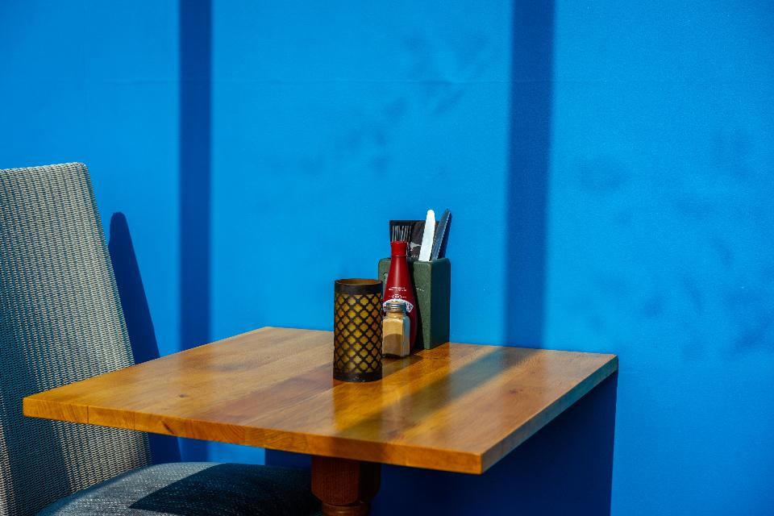

こだわり
活気とゆとり、家庭的な味わい。味菜十食堂が大切にしていること。
壱
活気とゆとりが同居する店内
カウンター・テーブル・座敷を備えたゆとりのある店内。店主の笑顔と、和気藹々としたスタッフの一体感のある雰囲気が、お客様を迎えます。
PHOTO SAMPLE

弐
家庭的で塩辛くない味付け
飲食店では珍しいほど塩辛すぎない、真っ当な味付け。家庭料理のような安心感のある味わいが評判です。
参
細部への配慮
キャベツの千切りの細さ、ネギの切り方まで、盛り付けや下ごしらえに丁寧な配慮が行き届いています。
四
昼どきの賑わいと駐車場案内
平日11時の開店直後から多くのお客様で賑わい、昼前には満席になることもあるようです。駐車場もご用意していますが、満車の際はスタッフが丁寧にご案内いたします。